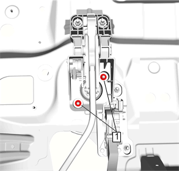
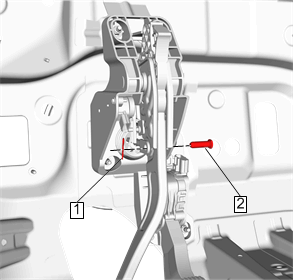
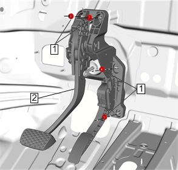

制动和加速踏板总成的更换
拆卸程序
1.
左侧地板前出风管»拆下 –
地板前出风管的更换－左侧
2.
中间转向轴»拆下 –
中间转向轴的更换
3.
传感器电气连接器»断开
4.
必要时转移部件。

5.
助力器固定螺母(1)»拆下[2x]

6.
制动踏板卡环(1)& 导销(2)»拆下
7.
将制动助力器从制动踏板上分离。

8.
制动踏板托架螺母 (1)»拆下[4x]
注意:
更换制动踏板时，主缸和助力器等需要往车头方向移动至少5mm。
9.
制动和加速踏板总成(2)»拆下
安装程序
1.
将制动和加速踏板总成(2)安装到车辆上。
告诫：
有关紧固件的告诫
2.
制动踏板托架螺母 (1)»安装并紧固[4x]
22N•m（16 lb ft）
注意:
保证安装好后金属软管表面没有变形。
3.
检查制动压力调节阀主管和辅助管金属软管表面是否有变形，若有变形需更换软管。
4.
制动踏板卡环(1)& 导销(2)»安装
告诫：
有关紧固件的告诫
5.
助力器固定螺母(1)»安装并紧固[2x]
22N•m（16 lb ft）
6.
传感器电气连接器»连接
7.
中间转向轴»安装 –
中间转向轴的更换
8.
左侧地板前出风管»安装 –
地板前出风管的更换－左侧
9.
校准制动踏板位置传感器。
制动踏板位置传感器的校准